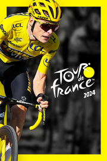

Tour De France 2024
Detalles
|  | |
| Tiempo de juego | No Jugado |
| Última actividad | Nunca |
| Añadido | 11/13/2024 0:35:38 |
| Modificado | 11/13/2024 1:05:58 |
| Estado de finalización | No Jugado |
| Librería | Playnite |
| Fuente | PORCHE |
| Plataforma | PC (Windows) |
| Fecha de lanzamiento | 6/6/2024 |
| Puntuación de la Comunidad | 67 |
| Puntuación de la Crítica | |
| Puntuación de usuario | |
| Género | Carreras Casual Deportes Estrategia Simuladores |
| Desarrollador | Cyanide Studio |
| Editor | Nacon |
| Característica | Cloud Saves Compat. Total Con Mando Coop. A Pantalla (Com)Partida Cooperativo Cromos De Jcj Jcj A Pantalla (Com)Partida Jcj En Línea Logros De Multijugador Pantalla Partida/Compartida Préstamo Familiar Remote Play Together Un Jugador |
| Enlaces | Punto de encuentro Discusiones Guías Noticias Página de la tienda PCGamingWiki Logros |
| Tag | 3D Ambientales Carreras Casuales Ciclismo Deportes Estrategia Gestión Motos y bicicletas Multijugador Para mando Para toda la familia Primera persona Realistas Relajantes Simulación Tercera persona Un jugador |
Descripción


Desafía a corredores de todo el mundo en el modo multijugador Criterium. Participa en partidas en línea con hasta 6 jugadores y establece tu estrategia para ganar la carrera. Crea tu propio equipo de 2 de entre más de 900 ciclistas profesionales y elige un maillot que te distinga de los demás.
Juega en modo Criterium cada semana e intenta desbloquear contenido adicional para tu equipo. Tendrás a tu disposición nuevos corredores profesionales y maillots de los equipos del World Tour para que puedas modificar el tuyo como quieras.
Adapta tu estrategia a la etapa. En multijugador, puedes escalar el Col du Galibier con un equipo de montaña o con un equipo de esprint. Las características de tus corredores se determinan aleatoriamente al inicio de la partida para garantizar que todos los jugadores tengan las mismas opciones. Después tendrás que demostrar que eres el mejor en todas las superficies.
Todas las sesiones son igual de importantes y hay que jugarlas dándolo todo. Tu posición final influye en el número de puntos que ganas. Cuanto mejor rindas, más rápido progresarás hacia las victorias de carrera para desbloquear corredores legendarios.


Juega con más corredores todavía en Tour de France 2024. Además de todos los equipos del World Tour que ya están incluidos en el juego, ahora puedes acceder a 15 equipos jugables del Pro Tour y sus corredores. Burgos-BH, Kern Pharma, Euskatel-Euskadi, Q36.5 Pro Cycling Team, Team Novo Nordisk y muchos más te esperan en los modos Mi Tour, Equipo Pro y Líder Pro. ¿Cuál elegirás?


En los modos Equipo Pro y Líder Pro tomarás las riendas de un equipo del pelotón profesional, conservando la posibilidad de crear tu propio equipo. Ahora puedes jugar con el equipo en la cima de las clasificaciones de la UCI o con un equipo ficticio. Según lo que elijas, serás libre de montar tu equipo desde cero o reclutar a los mejores corredores del pelotón.


Explora las nuevas opciones de personalización en Mi Tour y elige las reglas que quieras. Crea tu propia carrera a partir de las etapas disponibles en el juego y cambia las reglas como te parezca. Usa las reglas del Tour de France o las de la París-Niza y el Critérium du Dauphiné para que tus Tours sean diferentes.


- Accesibilidad mejorada para personas con discapacidades
- IA revisada para las etapas de montaña y los esprints intermedios
- El recorrido del Tour de France 2024
- Más o menos tiempo en el suelo en función de la gravedad de la caída
- Los líderes dejan que sus gregarios se adelanten en la montaña para hacer de relevos
- Vibración del mando en caminos de tierra